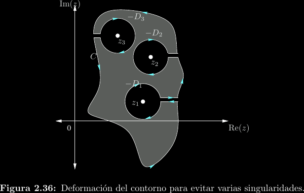

Integración compleja
Residues arise […] naturally in several branches of analysis […]. Their consideration provides simple and easy-to-use methods, which are applicable to a large number of diverse questions, and some new results […].
— Augustin-Louis Cauchy, Sur un nouveau genre de calcul, 1826.
Como no existe un ordenamiento de los complejos (no puede responderse si \(z_1 > z_2\) en el caso general), no podemos hablar de integrales definidas a como se tratan en análisis real: \[\int_a^b{f(x)\mathrm{d}x} = F(b) - F(a); \frac{\mathrm{d}}{\mathrm{d}x}F(x) = f(x)\]
En su lugar, para integrar desde un complejo \(a\) a un complejo \(b\), debemos además definir una trayectoria de integración \(C\) de entre muchas posibles. A las integrales resultantes les denominamos de contorno o de línea: \[\begin{align*}\int_C{f(z)\mathrm{d}z} &= \int_C{(u(x, y) + jv(x, y))(\mathrm{d}x + \mathrm{d}y)} \\ &= \int_C{(u(x, y)\mathrm{d}x - v(x, y)\mathrm{d}y)} + j\int_C{(v(x, y)\mathrm{d}x + u(x, y)\mathrm{d}y)} \\ &= F(b) - F(a)\end{align*}\]

Esta última equivalencia en términos de antiderivadas es el teorema fundamental para integrales de línea y solo sirve si \(f(z)\) es analítica en todo el plano. Si \(C\) es una curva cerrada que no se interseca a sí misma—como por ejemplo una circunferencia—utilizamos una notación especial para la integral de contorno: \[\oint_C{f(z)\mathrm{d}z}\]
Teorema de la integral de Cauchy
Este es un caso particular del teorema fundamental para integrales de línea en el caso de contornos cerrados. Si \(a\) es un punto en la curva cerrada y simple \(C\) y además \(f(z)\) es analítica en tanto \(C\) como su interior, puede decirse que la curva inicia y termina en el mismo punto \(a\), por lo cual: \[\oint_C{f(z)\mathrm{d}z} = F(a) - F(a) = 0\]
Las implicaciones de este teorema son profundas, al punto de que también se le conoce como teorema fundamental de la integración compleja. Algunas de ellas son:
-
Si una función compleja es diferenciable, necesariamente también es integrable. Esto puede entenderse como una consecuencia indirecta de que las funciones diferenciables sean holomorfas, pues cada una de las infinitas derivadas debe poseer su integral en la dirección contraria.
-
Las restricciones de la condición de holomorfismo son tan fuertes que, sin importar la escogencia de la función \(f(z)\) y la curva \(C\), la integral de contorno será cero siempre que la función no tenga singularidades sobre o dentro de \(C\).
-
El valor de una integral compleja de contorno cerrado depende solamente de los polos encerrados por el contorno. Esto quiere decir que: \[\oint_{C}{f(z)\mathrm{d}z} = \sum_{n}{\oint_{C_{pn}}{f(z)\mathrm{d}z}}\]
Donde \(C_{pn}\) es algún contorno cerrado—posiblemente un subcontorno de \(C\)—que solo contiene al polo \(n\) de \(f(z)\). La suma de integrales cubre solo los polos encerrados por \(C\).

Fórmula de la integral de Cauchy
Esta relación permite encontrar \(f(z_0)\) o cualquiera de sus derivadas, asumiendo que la imagen está definida y que \(z_0\) es parte del interior de \(C\). \[f^{(n)}(z_0) = \frac{n!}{2\pi j}\oint_{C}{\frac{f(z)}{(z - z_0)^{n + 1}}\mathrm{d}z}\]
En particular, cuando \(n = 0\), \[f(z_0) = \frac{1}{2\pi j}\oint_{C}{\frac{f(z)}{z - z_0}\mathrm{d}z}\]
Lo cual lleva a un método para el cálculo de integrales de contorno alrededor de un polo \(z_0\): \[\oint_{C}{\frac{f(z)}{z - z_0}\mathrm{d}z} = 2\pi j\cdot f(z_0)\]
Teorema del residuo
El teorema del residuo es, de los tres, el resultado más general para la evaluación de integrales de contorno. Lee: \[\oint{f(z)\mathrm{d}z} = 2\pi j\sum_{i = 1}^{n}{c_{-1}^{(i)}}\]
Es decir, la suma de los residuos asociados a todos los polos dentro de la región de integración.
-
Esto quiere decir que si una expansión en serie de Laurent tiene un residuo distinto de cero, entonces el centro de la serie es un polo. Esto coincide con lo que ya conocemos, puesto que si \(c_{-1}\) es distinto de cero entonces el centro \(z_0\) es un polo de al menos primer orden.
-
Junto a la fórmula de la integral de Cauchy, permite relacionar el valor de \(f(z_0)\) con el residuo de \(\frac{f(z)}{z - z_0}\) para una expansión centrada en \(z_0\). Es decir, este teorema ayuda a "agregar polos"..
Parametrizaciones
Frecuentemente encontraremos patrones regulares que permiten simplificar nuestras integrales. Algunos de ellos son:
-
Arcos con centro en el origen: En estos casos podemos realizar la sustitución \(z = e^{j\theta} = \cos(\theta) + j\sin(\theta)\), lo cual nos permite reducir la variable de integración a una variable real angular.

-
Líneas horizontales o verticales: En estos casos encontraremos que alguno de \(\mathrm{d}x\) o \(\mathrm{d}y\) es cero. Nuevamente se reduce el problema a integrandos complejos con variables de integración reales.

Evaluación de integrales reales
Las integrales complejas de contorno simplifican el cálculo de algunos tipos de integrales reales a través del uso de estos poderosos teoremas.
Integrales impropias sobre todos los reales
Dada alguna función real \(f(x)\) se tiene por continuación analítica que \[\int_{-\infty}^{\infty}{f(x)\mathrm{d}x} = \oint_D{f(z)\mathrm{d}z}\]
Bajo la condición de que \(\lim{z \to \infty}{z f(z)} = 0\). \(D\) es el contorno que se muestra a continuación, donde el radio \(R\) tiende a infinito:

Integrales de funciones trigonométricas
Si \(G(\sin(\theta), \cos(\theta))\) es racional y real, entonces \[\int_0^{2\pi}{G(\sin(\theta), \cos(\theta))\mathrm{d}\theta} = \oint_D{f(z)\mathrm{d}z}\]
Donde \(D\) es la circunferencia unitaria \(|z| = 1\) en dirección positiva. Puede demostrarse que las sustituciones respectivas son: \[\begin{align*}z &= e^{j\theta} \\ \mathrm{d}\theta &= \frac{\mathrm{d}z}{jz} \\ \sin(\theta) &= \frac{1}{2j}\left(z - \frac{1}{z}\right) \\ \cos(\theta) &= \frac{1}{2}\left(z + \frac{1}{z}\right) \end{align*}\]
Ejemplo
\[\begin{align*} &\int_0^{2\pi}{\frac{1}{2 + \cos(\theta)}\mathrm{d}\theta} \\ =& \oint_C{\frac{1}{jz\left(2 + \frac{1}{2}\left(z + \frac{1}{z}\right)\right)}\mathrm{d}z}; C: |z| = 1 \\ =& \frac{2}{j}\oint_C{\frac{1}{4z + z^2 + 1}\mathrm{d}z} \\ =& \frac{2}{j}\oint_C{\frac{1}{(z - (-2 - \sqrt{3}))(z - (-2 + \sqrt{3}))}\mathrm{d}z} \\ =& \frac{2}{j}\oint_C{\frac{1 / (z - (-2 - \sqrt{3}))}{z - (-2 + \sqrt{3})}\mathrm{d}z} \\ =& \frac{2}{j}\left(2\pi j\cdot\frac{1}{(-2 + \sqrt{3}) - (-2 - \sqrt{3})}\right) \\ =& \frac{2\pi\sqrt{3}}{3} \end{align*}\]